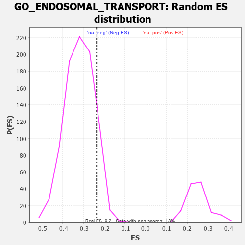

| | | Dataset | 7d |
| Phenotype | NoPhenotypeAvailable |
| Upregulated in class | na_neg |
| GeneSet | GO_ENDOSOMAL_TRANSPORT |
| Enrichment Score (ES) | -0.2362678 |
| Normalized Enrichment Score (NES) | -0.7398504 |
| Nominal p-value | 0.8952819 |
| FDR q-value | 1.0 |
| FWER p-Value | 1.0 |
Table: GSEA Results Summary
 Fig 1: Enrichment plot: GO_ENDOSOMAL_TRANSPORT
Fig 1: Enrichment plot: GO_ENDOSOMAL_TRANSPORT
Profile of the Running ES Score & Positions of GeneSet Members on the Rank Ordered List
| PROBE | GENE SYMBOL | GENE_TITLE | RANK IN GENE LIST | RANK METRIC SCORE | RUNNING ES | CORE ENRICHMENT | | 1 | DCLK1 | | | 55 | 2.532 | 0.0962 | No |
| 2 | CLN5 | | | 346 | 0.751 | 0.0900 | No |
| 3 | VPS54 | | | 1148 | 0.454 | 0.0071 | No |
| 4 | CHMP7 | | | 1435 | 0.403 | -0.0127 | No |
| 5 | UBXN6 | | | 2021 | 0.302 | -0.0745 | No |
| 6 | VPS25 | | | 2033 | 0.300 | -0.0637 | No |
| 7 | GOSR2 | | | 2050 | 0.298 | -0.0536 | No |
| 8 | STX16 | | | 2116 | 0.289 | -0.0500 | No |
| 9 | SNF8 | | | 2119 | 0.288 | -0.0385 | No |
| 10 | RAB6B | | | 2133 | 0.286 | -0.0285 | No |
| 11 | REPS1 | | | 2255 | 0.267 | -0.0330 | No |
| 12 | YKT6 | | | 2571 | 0.217 | -0.0640 | No |
| 13 | AP5M1 | | | 2574 | 0.216 | -0.0555 | No |
| 14 | ARL8B | | | 2577 | 0.216 | -0.0470 | No |
| 15 | VPS4A | | | 2654 | 0.205 | -0.0482 | No |
| 16 | GOSR1 | | | 2940 | 0.159 | -0.0778 | No |
| 17 | RAB17 | | | 2950 | 0.157 | -0.0726 | No |
| 18 | RAB10 | | | 2952 | 0.157 | -0.0663 | No |
| 19 | STX6 | | | 3087 | 0.138 | -0.0776 | No |
| 20 | VPS50 | | | 3177 | 0.125 | -0.0838 | No |
| 21 | BET1L | | | 3224 | 0.118 | -0.0848 | No |
| 22 | SNX17 | | | 3272 | 0.110 | -0.0863 | No |
| 23 | RAB8A | | | 3319 | 0.102 | -0.0880 | No |
| 24 | UBE2O | | | 3348 | 0.097 | -0.0875 | No |
| 25 | EPG5 | | | 3368 | 0.094 | -0.0861 | No |
| 26 | VPS16 | | | 3370 | 0.093 | -0.0825 | No |
| 27 | HGS | | | 3476 | 0.080 | -0.0925 | No |
| 28 | RIC1 | | | 3627 | 0.055 | -0.1092 | No |
| 29 | VTA1 | | | 3697 | 0.043 | -0.1162 | No |
| 30 | VPS52 | | | 3758 | 0.033 | -0.1225 | No |
| 31 | GGA1 | | | 3952 | 0.002 | -0.1468 | No |
| 32 | EVI5 | | | 3960 | 0.001 | -0.1477 | No |
| 33 | CHMP6 | | | 3977 | -0.003 | -0.1496 | No |
| 34 | VPS35 | | | 3989 | -0.006 | -0.1507 | No |
| 35 | SNX32 | | | 4012 | -0.010 | -0.1531 | No |
| 36 | VPS53 | | | 4036 | -0.014 | -0.1555 | No |
| 37 | VPS51 | | | 4137 | -0.030 | -0.1669 | No |
| 38 | STAM2 | | | 4193 | -0.041 | -0.1722 | No |
| 39 | GBF1 | | | 4215 | -0.044 | -0.1731 | No |
| 40 | VTI1A | | | 4224 | -0.046 | -0.1722 | No |
| 41 | GRIP2 | | | 4372 | -0.071 | -0.1880 | No |
| 42 | STX5 | | | 4400 | -0.077 | -0.1882 | No |
| 43 | VPS29 | | | 4433 | -0.082 | -0.1890 | No |
| 44 | LRRK2 | | | 4467 | -0.087 | -0.1896 | No |
| 45 | VPS28 | | | 4582 | -0.114 | -0.1994 | No |
| 46 | SNX27 | | | 4585 | -0.115 | -0.1949 | No |
| 47 | CHMP3 | | | 4660 | -0.129 | -0.1990 | No |
| 48 | ARF6 | | | 4704 | -0.140 | -0.1988 | No |
| 49 | RAB14 | | | 4784 | -0.155 | -0.2025 | No |
| 50 | VPS36 | | | 4845 | -0.167 | -0.2033 | No |
| 51 | TMCC1 | | | 4885 | -0.174 | -0.2011 | No |
| 52 | CHMP5 | | | 4952 | -0.188 | -0.2018 | No |
| 53 | SNX2 | | | 4966 | -0.191 | -0.1957 | No |
| 54 | ITSN1 | | | 5094 | -0.222 | -0.2027 | No |
| 55 | RAB7A | | | 5302 | -0.271 | -0.2179 | No |
| 56 | LYST | | | 5448 | -0.307 | -0.2238 | Yes |
| 57 | RAB9B | | | 5489 | -0.316 | -0.2160 | Yes |
| 58 | VPS39 | | | 5533 | -0.329 | -0.2080 | Yes |
| 59 | EHD1 | | | 5560 | -0.336 | -0.1976 | Yes |
| 60 | SNX4 | | | 5834 | -0.415 | -0.2153 | Yes |
| 61 | RAB13 | | | 5870 | -0.425 | -0.2024 | Yes |
| 62 | DCTN1 | | | 5950 | -0.454 | -0.1939 | Yes |
| 63 | ACTN2 | | | 5960 | -0.458 | -0.1764 | Yes |
| 64 | GCC2 | | | 5994 | -0.470 | -0.1614 | Yes |
| 65 | VAMP3 | | | 6043 | -0.487 | -0.1477 | Yes |
| 66 | UBB | | | 6090 | -0.503 | -0.1330 | Yes |
| 67 | EHD4 | | | 6227 | -0.545 | -0.1280 | Yes |
| 68 | AP3D1 | | | 6261 | -0.558 | -0.1095 | Yes |
| 69 | EEA1 | | | 6430 | -0.631 | -0.1050 | Yes |
| 70 | ARL1 | | | 6438 | -0.636 | -0.0800 | Yes |
| 71 | ALMS1 | | | 6590 | -0.704 | -0.0704 | Yes |
| 72 | SNX33 | | | 6930 | -0.888 | -0.0772 | Yes |
| 73 | SNX3 | | | 6934 | -0.893 | -0.0412 | Yes |
| 74 | DNM1L | | | 6963 | -0.913 | -0.0075 | Yes |
| 75 | DPY30 | | | 6976 | -0.923 | 0.0285 | Yes |
| 76 | ABCA1 | | | 7243 | -1.113 | 0.0402 | Yes |
| 77 | UBC | | | 7410 | -1.274 | 0.0711 | Yes |
Table: GSEA details [plain text format]

Fig 2: GO_ENDOSOMAL_TRANSPORT: Random ES distribution
Gene set null distribution of ES for GO_ENDOSOMAL_TRANSPORT